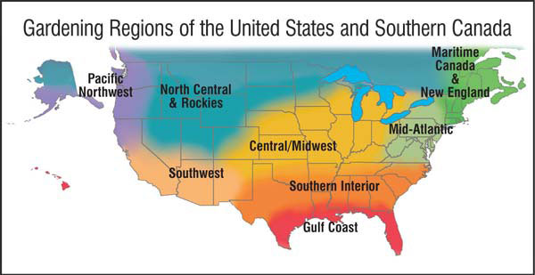
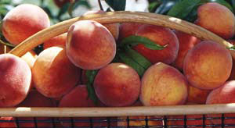
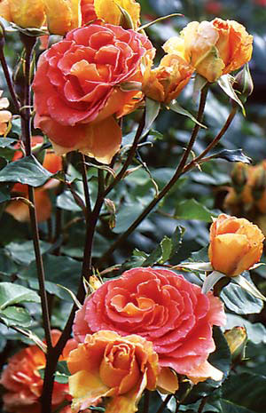

Gardener’S Almanac
Celebrate summer’s bounty with these timely gardening tips.
Edited by Carol Mack
June/July 2006
Maritime Canada and New England
June brings warm sun on our backs, the scent of lilacs and a scramble to get summer crops in the ground. We feast on spinach and asparagus and mound hills for squash plants. Pepper, melon and cucumber seedlings can be transplanted into warm soil - if cucumber beetles are an annual problem, protect melon and cucumber seedlings with row covers. Plant beans and corn, and sow additional lettuce and cilantro. Peas are ready for climbing support and carrots need thinning.
Onions start to form bulbs in late June or early July - a good time to top-dress them with compost, organic fertilizer, or fish or blood meal. July promises a full bounty by month’s end, starting with the first peas, strawberries and tender, buttery broccoli. Sour cherries and raspberries lead up to the crowning moment of summer: the first tomatoes. Late July is time for planting spinach, brassicas, raab and other greens to ensure a fall harvest.
- Roberta Bailey, FEDCO Seeds, Waterville, Maine
Mid-Atlantic
In early June, prepare seed potatoes for a late season crop by letting them sprout in sunlight for two weeks before planting. This process, called “green chitting,” will speed growth and increase yields. If Mexican bean beetles have been a problem, consider ordering Pedio wasps (Pediobius foveolatus) and applying these tiny parasitic biocontrols when you first spot beetle larvae.
Mulch warm season crops now, and mow buckwheat cover crops before they set seeds. Sow peanuts, transplant Brussels sprouts, and plant more brassicas and Asian greens under row covers. Add a shade cloth over the row cover if the temperature is very high. ‘Nutribud’ broccoli is especially nutritious and will produce well in both spring and fall. Two weeks after the tops start to die down, bring in early potatoes, and order seeds for winter cover crops. Plan now to enter some produce in your local county fair this summer.
- Ira Wallace, Southern Exposure Seed Exchange, Mineral, Va.
Southern Interior
There still is time in June to transplant tomatoes, peppers and eggplant for a late crop. Keep sowing summer vegetables such as okra, beans, cucumbers, watermelon, pumpkins and Southern peas. Faster maturing crops such as beans and summer squash can be planted through July for continuous harvest until frost. Gather herbs early in the morning and before they begin flowering - then hang them to dry, out of direct sunlight. In July, start indoor plantings of cabbage, broccoli, cauliflower, Brussels sprouts and collards to transplant when the weather cools.
Midsummer is prime time for pulling and hoeing weeds before they have a chance to go to seed; this reduces the number of weeds sprouting next year. Take a break in a lawn chair and sip some iced tea while ordering seeds for the fall garden. I like to have on hand seeds of lettuce, spinach and other greens, ready to sow in late summer.
- Becky Wilder, Seeds for the South, Graniteville, S.C.
Gulf Coast
The garden usually looks great this time of year, but when it is hot and dry, spider mites may get the upper hand, causing leaves to become yellow. High-pressure water sprays will often solve the problem. If not, try wettable sulfur - just be sure not to spray squash, cucumbers or other cucurbits, because the sulfur will burn their leaves. Plant succession crops of heat-tolerant plants such as Southern peas, climbing spinach, okra and yard-long beans; and start cherry tomatoes now for the fall season.
During the heat of summer, nothing beats a drip system on a timer to keep the garden flourishing. Check out inexpensive timers that are easy to program and connect directly to the spigot. In the orchard, don’t fall behind on cover sprays. Last season taught me that the plum curculio that loves our peaches, plums and nectarines can attack late in the season as well as early.
- William D. Adams, Burton, Texas
Central/Midwest
Long summer days bring overnight changes to the garden. We still are seeding, transplanting, mulching and pruning, but also harvesting greens, broccoli and cut flowers. As crops finish, turn over the soil, add some compost and replant for the fall harvest. These months are ideal for planting warm-soil-loving vegetables such as squash, beans, basil and corn.
Carrots can be seeded now without fear of carrot rust fly damage. The key to direct-seeding success is keeping the soil moist while seeds germinate. Covering them with straw, burlap or a thin piece of wood can help. Check the soil each morning; gently water if it appears dry. The cool water also keeps summer heat from affecting the seed. Try growing one or two new plants, perhaps a new flavor of basil or a different kind of flower. Who knows? It could become your new favorite.
- Connie Dam-Byl, William Dam Seeds Ltd., Dundas, Ontario
North Central and Rockies
When the danger of frost is past and the soil is warm, there is a flurry of activity planting corn, beans and squash (and melons where the season is long enough). In cooler areas, preheat the soil for several days with clear plastic for better germination and initial growth. It’s time to mulch fruit trees, berry bushes and woody landscape plantings. This is vital in the northern plains, where conditions are especially stressful for these forest natives. Thick organic mulch will conserve water, provide temperature insulation and discourage competing grasses and weeds.
This year, try interplanting a winter green-manure crop of clover between carrot or corn rows. To minimize competition, wait a month or two after the vegetables are established to seed the clover, and watch it take off in cooler weather after crops are harvested. In mid-July, plant kale, beets, fall radishes and brassicas for autumn harvest.
- Bill McDorman, Seeds Trust, High Altitude Gardens, Hailey, Idaho
Pacific Northwest
In June, few gardeners are truly caught up with everything. Warm season crops need planting, lettuce and greens should be thinned and picked, and there is mulching and weeding to do. Don’t be discouraged - the secret is just to keep moving ahead. As we shift into July, it’s time to think about winter. In most of the Pacific Northwest, mild winters allow us to harvest garden-fresh produce many parts of the country can only yearn for. The key is starting these crops early enough and choosing varieties specifically bred to grow in the fall. Beets, broccoli, cabbage, carrots, cauliflower, kale, kohlrabi, parsnips, peas and Swiss chard are all cold-weather standbys that you can start now.
Basil lovers: Your main crop can be direct-seeded in July. Space the seeds a couple of inches apart, press into soil, keep moist, and they’ll sprout in a few days. Soon you’ll have a bumper crop with minimal effort.
- Rose Marie Nichols McGee, Nichols Garden Nursery, Albany, Ore., and Josh Kirschenbaum, Territorial Seed Co., Cottage Grove, Ore.
Southwest
The feast day of San Juan, June 24, is associated with the arrival of Southwest “monsoons.” These sudden and heavy rains present opportunities for water catchment. A simple gutter system can collect thousands of gallons of water annually that can be stored in cisterns for use in the garden throughout the year.
As tomatoes, chilies, beans, squash and corn take off, our attention turns to grasshoppers. Consider inviting poultry into your garden to convert these pests into a gourmet treat. Movable poultry coops will keep birds out of freshly seeded areas and focus activities in areas of greatest need. An alternative grasshopper control is Nosema locustae, a commercially available microbial agent in several formulations.
When hardneck garlic plantings produce curly flower stalks, cut them off to promote larger bulb formation. But save the tender stalks - called scapes - and braise with olive oil. This unusual early summer delicacy will become an annual favorite.
- Emily Gatch, Seeds of Change, San Juan Pueblo, N.M.
 JUDITH ANN GRIFFITH/SEED SAVERS EXCHANGE A hummingbird feeds on the nectar of hyacinth bean flowers. This striking annual vine produces unique shiny, purple seedpods. Its leaves, seeds, pods and roots are edible (although the seeds and pods must be cooked properly). |
 WILLIAM D. ADAMS Gardening Regions of the United States and Southern Canada |
 JERRY PAVIA Luscious peaches, such as these ‘Mid-prides,’ are one of the gastronomical wonders produced in home gardens. |
|
 Many rose varieties are easy to root from cuttings. |
|
|